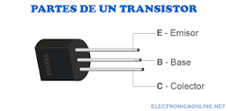

Las partes de un transistor
Todo transistor se compone de tres elementos: base, colector y emisor. Los transistores operan sobre un flujo de corriente, operando como amplificadores (recibiendo una señal débil y generando una fuerte) o como interruptores (recibiendo una señal y cortándole el paso).

Emisor
Base
Colector
Inicio
Partes del transistor
Tipos de transistor
Usos del transistor
 Inicio
Inicio Tipos de transistor
Tipos de transistor Usos del transistor
Usos del transistor